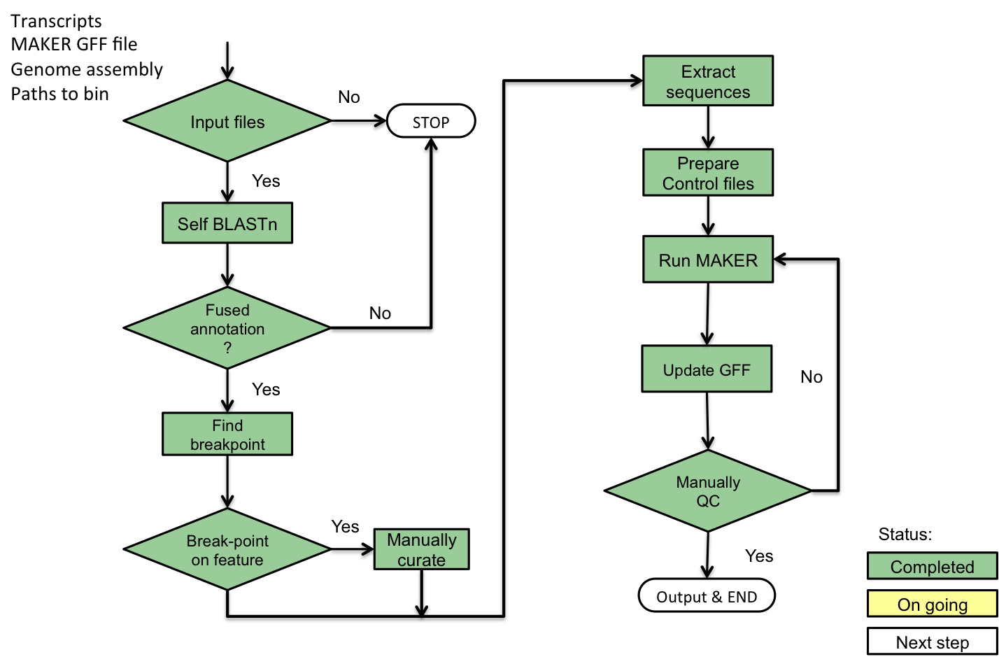

3. Tutorial¶
3.1. Prepare your prerequisites¶
- install dependencies
- prepare outputs from previous MAKER run
- run detect_fused_gene.py
- run extract_to_maker.py
- review results or trouble shooting
3.2. Example - rice chromosome 9¶
detect fused gene candidates:
python bin/1_detect_fused_gene.py -i resources/rice_chr9_transcript.fa -g resources/rice_chr9.gff -n 30 -p chr9_S1R2
split fused gene and locally re-annotation:
python bin/2_extract_to_maker.py -i resources/rice_chr9.fa -d chr9_S1R1/gff.db -c chr9_S1R1/break_coordinates.brk \ -t resources/rice_chr9_ctl/ -n 28 -p chr9_S2R1
drop fused gene entries from original transcript and protein sequence fasta files:
mkdir chr9_post_process python bin/3_process_fasta_file.py -i resources/rice_chr9_transcript.fa -g chr9_S2R1/gene_features_wo_fused.gff \ -o chr9_post_process/rice_chr9_transcript_drop_fused.fa python bin/3_process_fasta_file.py -i resources/rice_chr9_protein.fa -g chr9_S2R1/gene_features_wo_fused.gff \ -o chr9_post_process/rice_chr9_protein_drop_fused.fa
run maker standard on defused gene set. MAKER standard is a procedure to get rid of low-quality gene models:
python bin/4_run_maker_standard.py -t merged_transcripts.fa -p merged_protein.fa -g merged_gff.all.mod.gff \ -a Pfam/Pfam-A.hmm -o chr9_post_process/
generate AED score improvement plot:
python bin/5_generate_report.py -b chr9_S1R1/break_coordinates.brk \ -i resources/rice_chr9.gff \ -g chr9_S1R1/merged_defused.all.mod.std.gff \ -o chr9_post_process/chr9